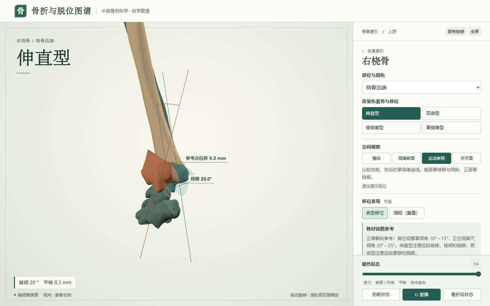
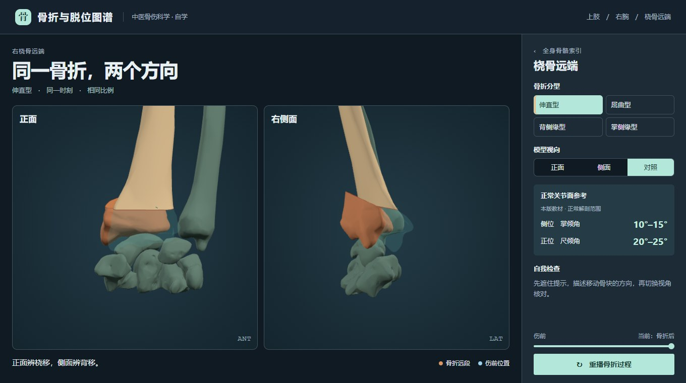
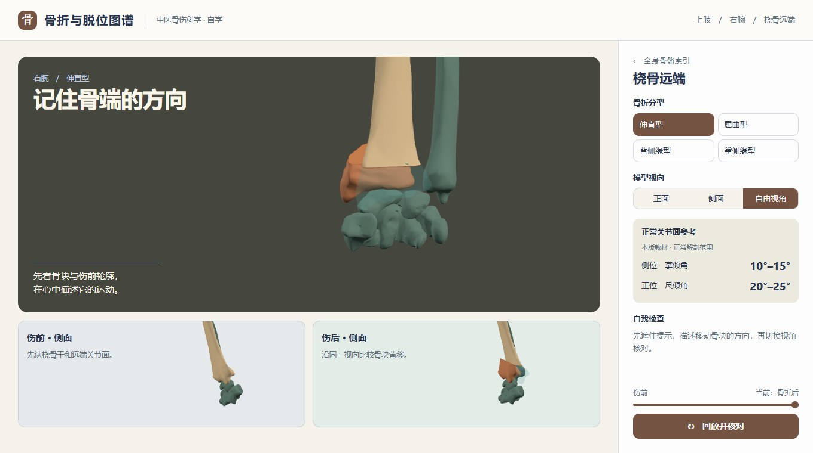

A 已应用于在线图谱；B、C 是可选择的布局样稿。三个方案都展示男性右腕伸直型骨折。点选图片可放大查看。
单个大模型中标出骨轴、转角和位移，固定播放区便于反复拖动。 查看整站首页

同时比较正面和右侧面，分别辨认桡移与背移。画面均为三维模型的视图。

主图留给自己判断，下方同视向的两帧用于核对。

交互参考：Smithsonian Voyager 的三维注释 · BoneHub 骨骼索引 · shadcn/ui 布局库